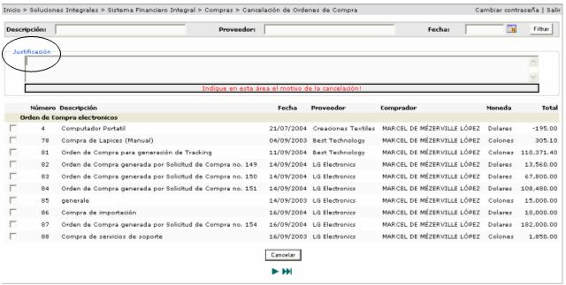

Este proceso permite realizar la cancelación de órdenes de compra, por tal motivo las mismas no serán surtidas. Este proceso implica la liberación de aquellas solicitudes de materiales que se encuentran incluidas en la orden de compra que se va a cancelar.
Las órdenes de compra que se pueden cancelar, son aquellas que están aplicadas y que NO HAN SIDO SURTIDAS.
Se debe de justificar
el motivo de la cancelación de dicha orden. Se selecciona (n) la (s) orden
(es) y se presiona el botón  .
.
